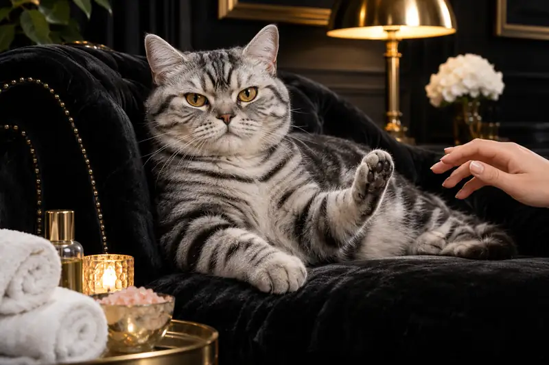

Koci Notatnik / Kocie opowieści
Spa i moje granice · 4 min czytaniaDlaczego gryzę podczas głaskania? Obsługa pomyliła pakiety.
Witajcie w moim spa. Personel ma dwie ręce i niestety tylko jedno tempo: za długo. Zamówiłem głaskanie policzka, a ten talent zaczął zwiedzanie całego kota. Dziś wyjaśnię, dlaczego kot gryzie podczas głaskania i kiedy człowiek powinien uprzejmie zabrać dłonie.

Pierwszy głask? Luksus. Drugi? Znakomicie. Potem ręka jedzie po brzuchu, jakby dostała dostęp do strefy VIP. Kochani. Brzuch był w kadrze, nie w ofercie.
Poruszam ogonem. Odwracam głowę. Człowiek dalej swoje. A gdy kończę sesję zębami, słyszę: „Przecież sam przyszedłeś!”. Tak. Do fryzjera też przychodzisz sam, a nie chcesz, żeby golił Ci brwi.
Wyjaśnijmy więc, dlaczego kot gryzie podczas głaskania i jak skończyć zabieg, zanim poleci reklamacja.
Dlaczego kot gryzie, skoro przed chwilą chciał głaskania?
Dotyk może po pewnym czasie stać się zbyt intensywny albo po prostu nieprzyjemny. Niektóre koty lubią bardzo krótkie sesje, inne dłuższe. To, że chciałem kontaktu przed chwilą, nie oznacza, że nadal go chcę. Mogę też szukać Twojego towarzystwa bez ochoty na głaskanie.
Sygnały z planu: kiedy kończę nagranie?
Zwróć uwagę na napięcie ciała, uszy odchylone do tyłu, energiczne ruchy ogona, odwracanie głowy w stronę ręki lub próbę odejścia. Rozszerzone źrenice też mogą towarzyszyć pobudzeniu, ale zależą również od światła. Jeden sygnał nie jest słownikiem całego kota.
„Ale na zdjęciu wyglądałeś na zadowolonego!” — słyszę. Kochani, zdjęcie to ułamek sekundy. Moje granice obowiązują również poza kadrem. Człowiek dopiero to odkrywa. Rozwój osobisty trwa.
Mój sprawdzony rytuał: krótko, delikatnie i za zgodą gwiazdy
Pozwól mi podejść. Zaproponuj spokojną dłoń i sprawdź, czy sam ocieram o nią głowę. Zacznij od delikatnego dotyku w okolicy policzków, podbródka lub głowy, jeśli go lubię. Po kilku ruchach zrób pauzę. Jeśli odchodzę albo nie szukam dalszego kontaktu, zakończ. Brzuch na widoku nie jest automatycznym zaproszeniem do dotykania.
Zostaw mi drogę odejścia. Nie przytrzymuj mnie na kolanach i nie ścigaj dłonią, kiedy się odsuwam. Czasem udana sesja kończy się po kilku sekundach. To wciąż udana sesja.
Co zrobić, gdy już ugryzę?
Przerwij kontakt, zachowaj spokój i daj mi przestrzeń. Nie karć, nie krzycz i nie próbuj natychmiast brać mnie na ręce. Nie baw się gołą dłonią — do polowania służy zabawka trzymana w bezpiecznej odległości od palców.
Wasze pytania po dniu w spa
- Czy delikatne podgryzanie zawsze oznacza miłość?
- Nie. Może wiązać się z zabawą, pobudzeniem albo próbą zakończenia kontaktu. Obserwuj sytuację, zamiast nadawać każdemu ugryzieniu romantyczną nazwę.
- Czy mruczący kot może mieć dość?
- Tak. Mruczenie nie unieważnia napięcia ciała, odsuwania się ani innych sygnałów.
- Czy mam przyzwyczajać kota do dotyku na siłę?
- Nie. Daj mu wybór i krótkie, spokojne kontakty. Trudności omów z lekarzem weterynarii lub wykwalifikowanym behawiorystą.
- Dlaczego nagle gryzę przy dotykaniu jednego miejsca?
- Przyczyną może być ból. Nowa reakcja, zwłaszcza przy konkretnym obszarze ciała, wymaga konsultacji weterynaryjnej.
Nie każde ugryzienie wynika z nadmiaru głaskania. Ból, strach i pobudzenie mają różne przyczyny. Przy nagłej lub nasilającej się zmianie zachowania zacznij od lekarza weterynarii.
Wieczorem wróciliśmy do spa. Dwa delikatne głaski. Pauza. Sam otarłem policzek o jego dłoń. I proszę: obsługa po szkoleniu potrafi zdziałać cuda. Dajcie znać swoim ludziom, że prawdziwy pakiet VIP obejmuje prawo do zakończenia zabiegu.
Żeby nie trzeba było tłumaczyć drugi raz
Pozwól kotu inicjować kontakt, rób pauzy i przerwij, gdy napina ciało lub chce odejść. Nie przytrzymuj go i nie karć. Nagła reakcja na dotyk konkretnego miejsca może oznaczać ból — wymaga konsultacji weterynaryjnej.